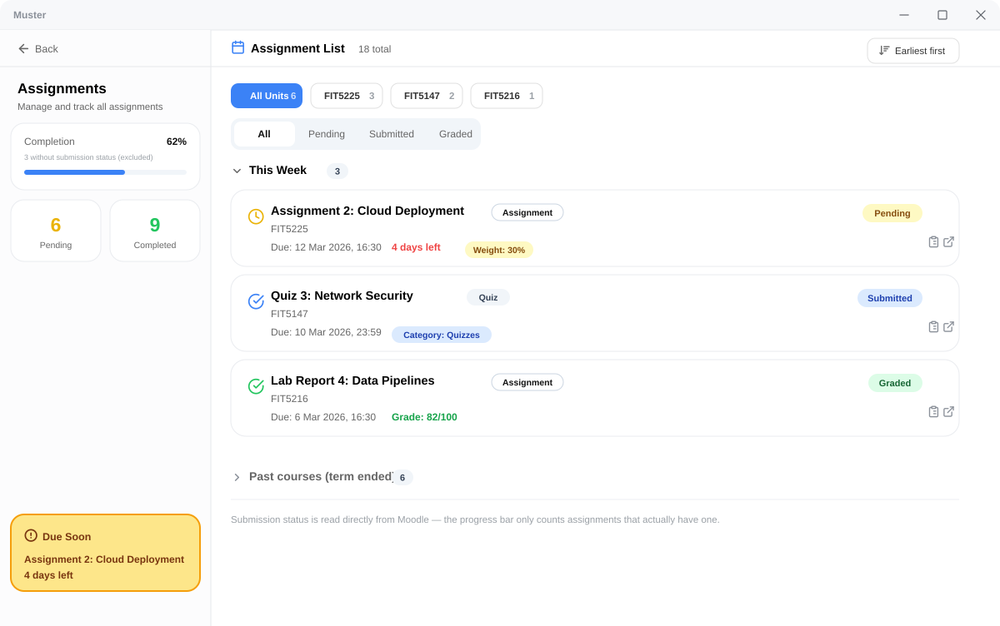
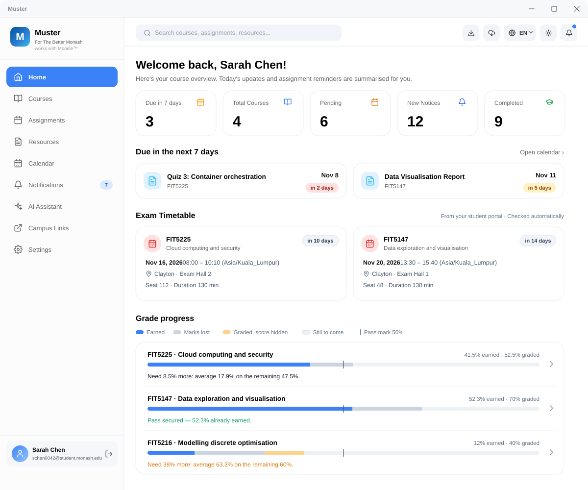
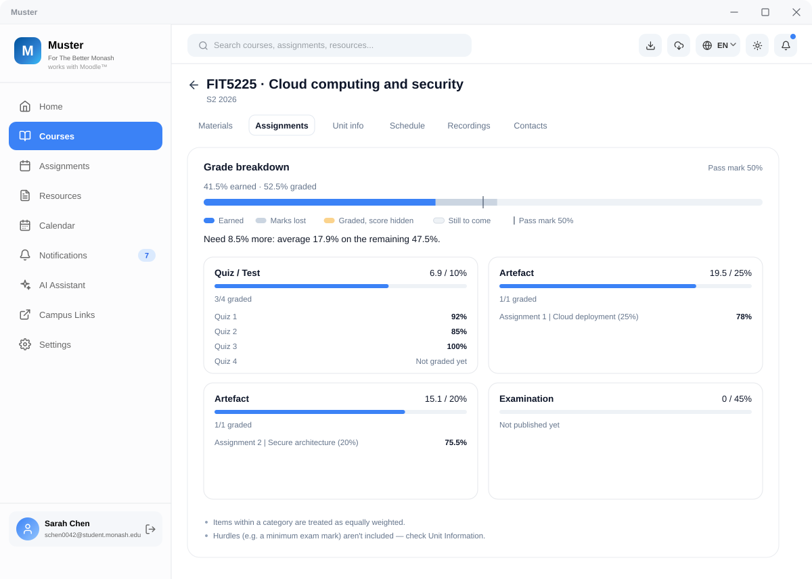
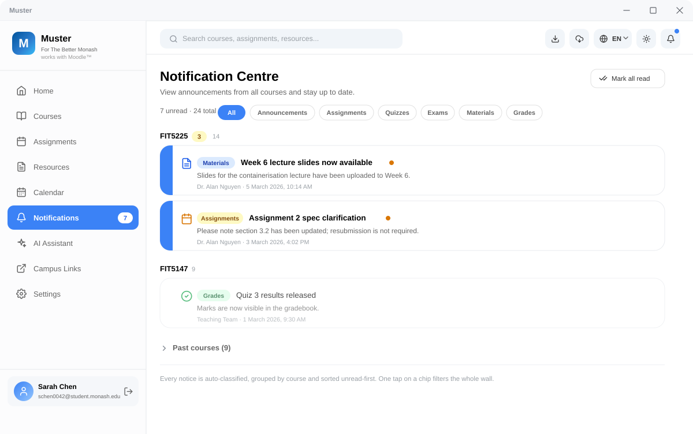
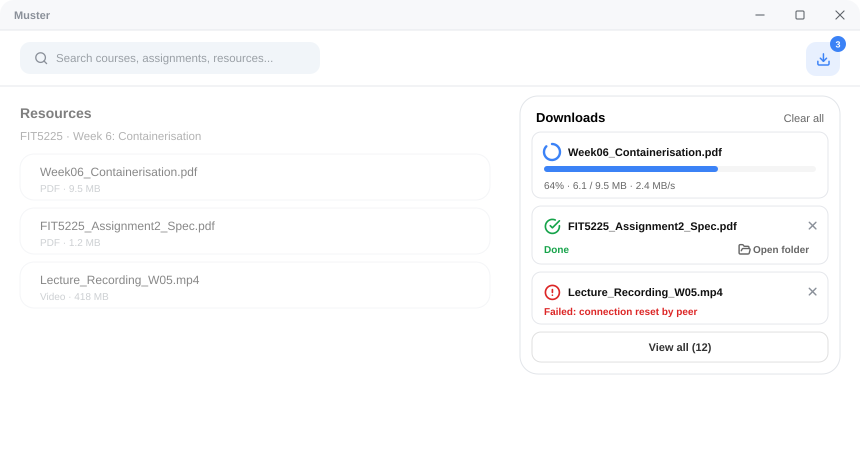

Real submission status.
Submitted, graded or still due — straight from Moodle, sorted by date.

All of Moodle. One window.
Sign in once with your Monash account. Deadlines, exams, grades, slides and announcements from every unit arrive in one place — and stay on your computer.
Windows 10 / 11 · macOS 12+ · Linux (AppImage, .deb, AUR) · No sign-up required

Muster groups every unit's marks by assessment category, adds up what you've earned, and tells you the average you need on what's left to reach 50%.

Illustrative data. Hurdle requirements aren't included — check your Unit Information.
Muster reads your official exam schedule from the Monash student portal — date, time, room and seat — and checks for changes automatically.
Submitted, graded or still due — straight from Moodle, sorted by date.

Student Portal, WES, Allocate+, Special Consideration and more — each with a plain-language explainer.
A native app that idles quietly, syncs only what changed, and keeps working without Wi-Fi.
Grouped by unit, unread first, tagged as exam, assignment, material or grade.

Saved into Unit / Week folders, with live progress.

Weekly action cards and answers linked to the exact slide. Bring your own key or a local model.

Muster has no servers. You sign in on Monash's own page, and everything it collects is stored only on your device.
You sign in on Monash's official page, MFA included.
Courses, files and grades are stored only on your computer.
Session tokens live in the system credential store, bound to your account.
Install for your platform. If Windows or macOS shows a routine warning, allow it to run.
The same official login you use for Moodle, MFA included.
Your units, deadlines, exams and grades are ready — and stay up to date on their own.
Free for Monash students. Windows, macOS and Linux.
Windows 10 / 11 · macOS 12+ · Linux (AppImage, .deb, AUR) · No sign-up required